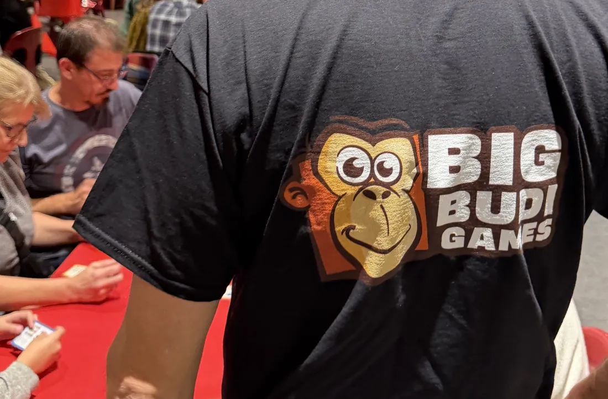
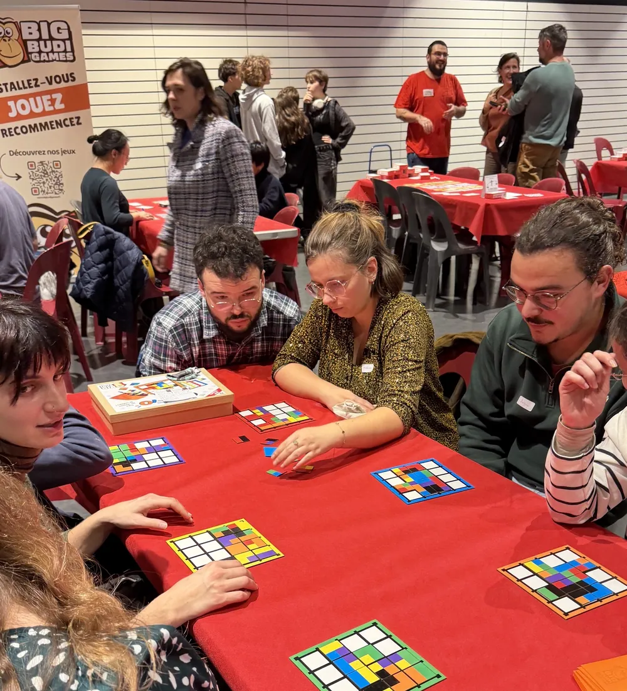
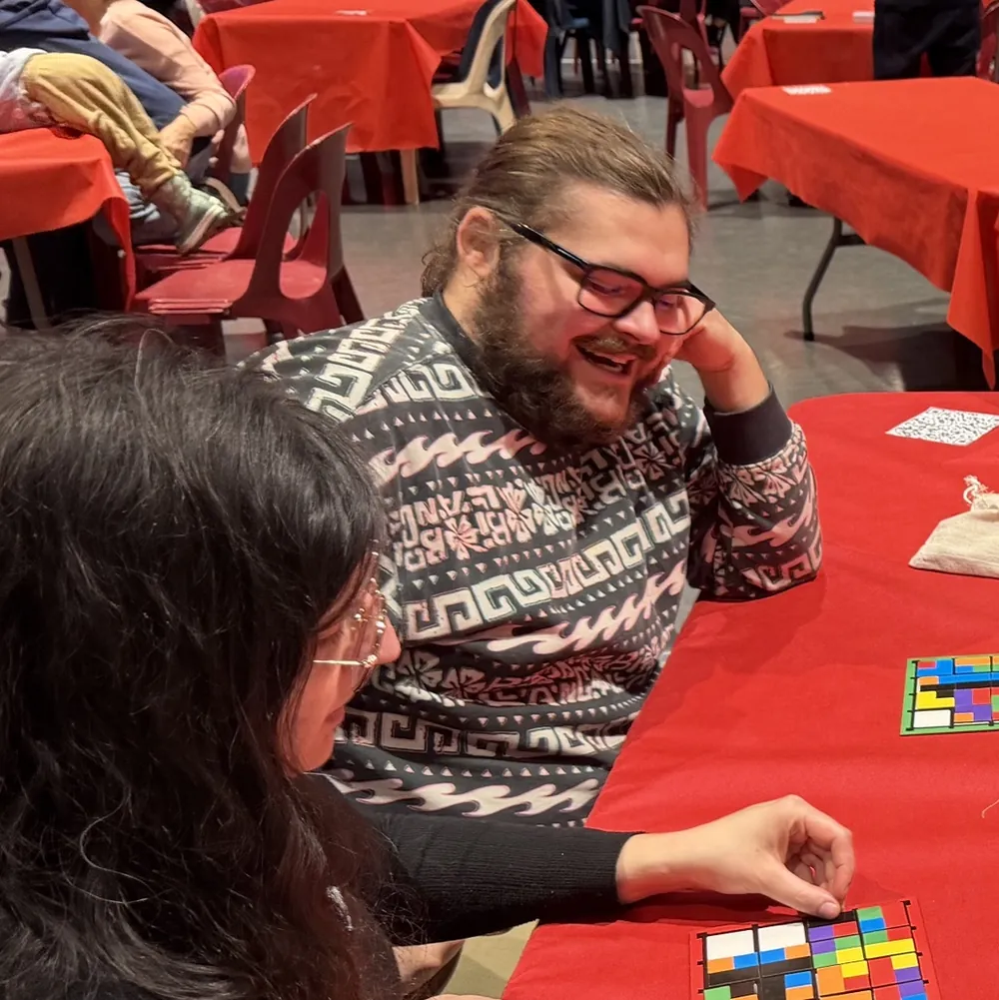
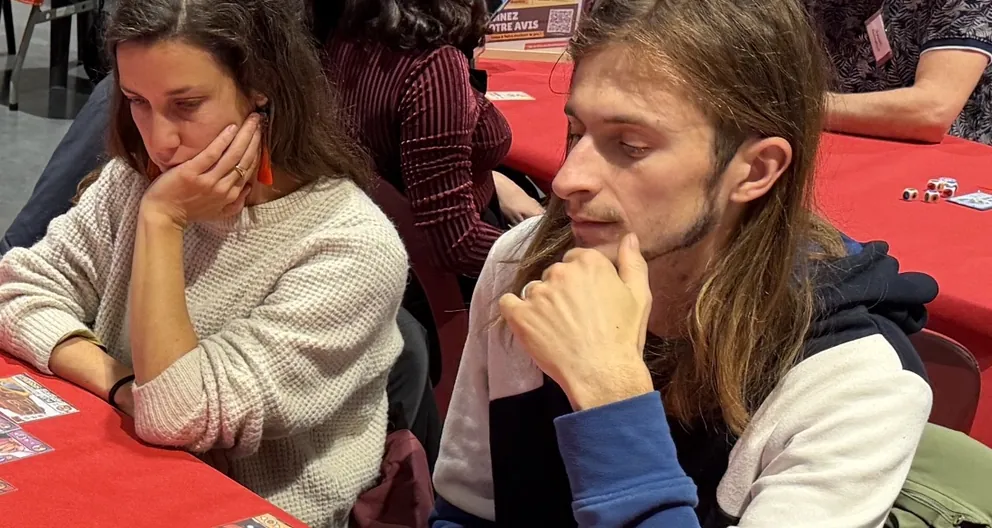
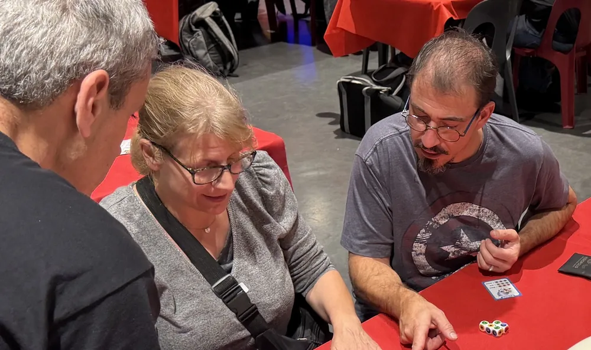
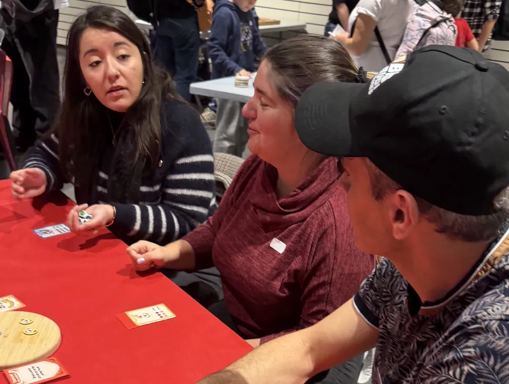

JAL : un week-end incroyable à Lattes
14 et 15 novembre 2026

Les 14 et 15 novembre, nous avons posé nos trois prototypes sur les tables du festival JAL, à Lattes. Et quel week-end ! On s’en souviendra longtemps.
- 180+joueuses et joueurs à nos tables
- 60+parties jouées
- 3prototypes à l’essai
Un week-end sans temps mort
Nous n’avons pas arrêté ! Les tables ne désemplissaient pas, nous étions sollicités en permanence, ça se bousculait pour s’asseoir… et beaucoup sont revenus jouer une deuxième fois. Les retours ont été excellents, avec énormément de bonne humeur et d’énergie autour des tables.


Beaucoup de familles sont passées nous voir, et de nombreux enfants ont joué avec nous. Des joueuses et des joueurs plus aguerris se sont aussi installés, notamment autour d’EDIT.

Sylvain Bonnafous à sa table
Sylvain Bonnafous, l’auteur de TornaDice, était avec nous tout le week-end. Il a animé sa table du début à la fin, avec une énergie communicative : les bonnes vibes étaient au rendez-vous. Merci Sylvain !


Une nuit pas comme les autres
Samedi soir, les intempéries se sont abattues sur Lattes. Avec la montée des eaux, impossible de quitter la salle : nous y sommes restés bloqués jusqu’à 4 heures du matin.
Nous avons d’abord une pensée pour toutes les personnes touchées par ces intempéries. De nombreuses voitures ont été emportées par les flots, et les dégâts sont importants.
À l’abri dans la salle, la soirée a pris une tournure inattendue. Nous avons joué toute la nuit, découvert et fait découvrir des protos à des auteurs renommés, beaucoup échangé et partagé. Un moment hors du temps, que nous n’oublierons jamais.
Merci !
Un grand merci aux organisateurs du JAL, à la ville de Lattes, à Christian Rubiella et à toutes celles et ceux qui nous ont accueillis pour ce super festival. Et merci à toutes les joueuses et tous les joueurs pour leurs retours : ils nous aident à peaufiner nos jeux.
Et la suite ?
Prochain rendez-vous le 22 novembre au SAGS, le Saint-Aunès Games Show. Toutes nos dates de novembre →
Pour ne rien rater de nos prochains jeux et festivals, rejoignez notre newsletter.